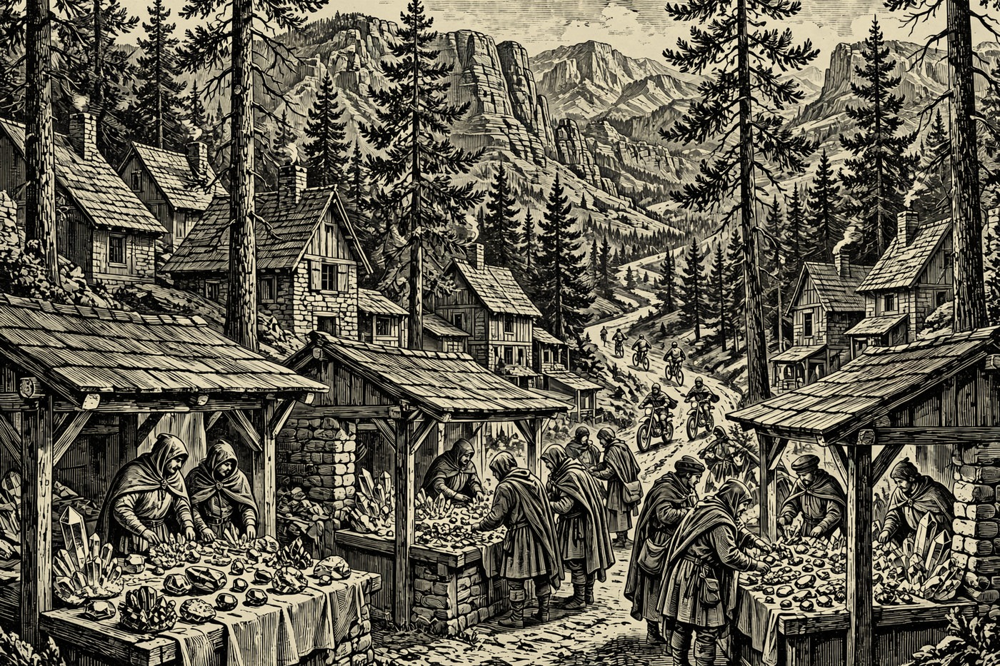
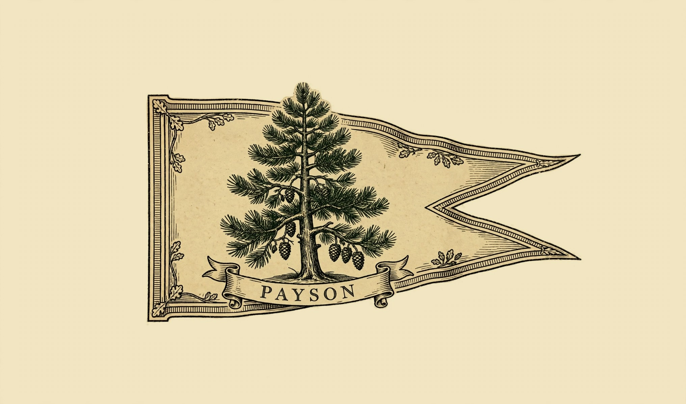
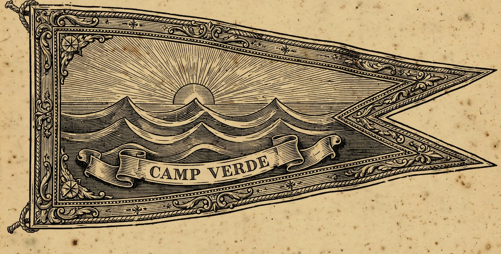
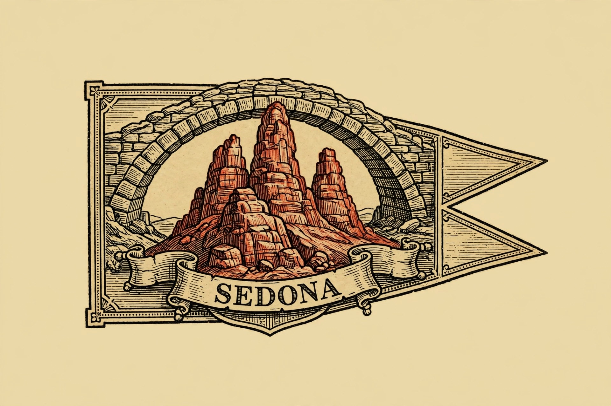
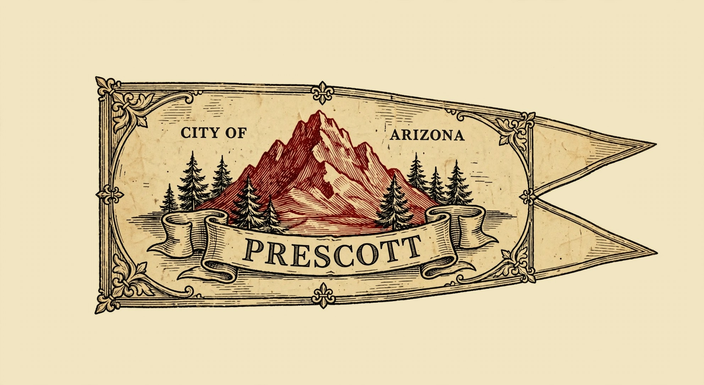

PAYSON — Hail, wayfarer, and good Loredas to you — the sun is up over the Rim, the air is cool and bright, and every road out of the Hearth leads somewhere merry today. Down in Miami, the Gila County Gem and Mineral Society spreads its Fall Show and Sale across the Bullion Plaza yard from 9 AM to 2 PM, free for all who love a sparkling stone. Here at home, two hundred dual-sport riders roar out of the Payson Elks Lodge for Howlin’ at the Moon, and tonight the Rim Country Marine Corps Ball fills the Mazatzal with ceremony and dancing. West in Sedona, the Mountain Bike Festival takes over Posse Grounds Park, Prescott opens its zoo gates for a one-dollar day, and the Verde Valley gathers for its first Wellness Festival — by the Nine, a finer Saturday is hard to picture.
Happening in the Holds Today

Payson— 2026 Howlin’ at the Moon — AMA/Beta National Dual Sport Series — Payson Elks Lodge, 1206 N Beeline Hwy. Two hundred riders take to the forest today and tomorrow, rain or shine. Check-in runs 6:00–8:00 AM today over a full breakfast of eggs, bacon, sausage, biscuits and gravy, and coffee, then riders head out on a 110–120 mile loop with a lunch stop near the midpoint. Registration closed October 26, so today belongs to the registered riders — and to everyone who enjoys the sight and sound of the Hold’s roads full of adventure.— 2026 Rim Country Marine Corps Ball — Mazatzal Hotel & Casino, Payson, $50 per person. The evening opens with a VIP early check-in at 4 PM and a social hour at 5 PM, followed by the formal ceremony at 6 PM — no admittance during the ceremony itself — then dinner at 7 PM, a raffle, and the famous money tornado. A band and dancing follow directly after, and the whole Hold is welcome to honor the Marines in fine style.- Miami— Gila County Gem & Mineral Society Fall Show and Sale — Bullion Plaza Cultural Center & Museum Yard, 150 Plaza Circle, Miami, today only, 9 AM–2 PM, free admission. Vendors fill the yard with gems, minerals, jewelry, and rocks of every stripe, and rockhounds and jewelry makers stand ready to talk shop with travelers. Popcorn and water are sold on site, and the Taqueria La Familia and Grindhead Coffee trucks keep everyone fed — a perfect short ride down the road from the Hearth, and it ends at 2 PM, so go early.

Camp Verde— Verde Valley Wellness Festival — Verde Valley Fairgrounds, 800 E Cherry St, Cottonwood, today 11 AM–4 PM, free admission. The first annual gathering of its kind in the Verde Valley brings holistic health practitioners, fitness professionals, local businesses, and wellness educators together for mini sessions, talks, shopping, food trucks, and family activities. It is an easy drive from Camp Verde, and a gentle way to spend the middle of a sunny Saturday.
Sedona— 2026 Sedona Mountain Bike Festival — Posse Grounds Park, 525 Posse Grounds Rd, Sedona, running Friday through Sunday, November 6–8. The must-visit mountain bike gathering of the year fills the park with an expo, bike demos, shuttled rides on Sedona’s famous red singletrack, gear vendors, a beer garden, food trucks, skills clinics, and live bands. Passes are sold at the festival registration booth, and today is the festival’s biggest day — arrive ready for crowds of happy riders under the red rocks.
Prescott— Dollar Day at Heritage Park Zoo — Heritage Park Zoological Sanctuary, 1403 Heritage Park Rd, Prescott, today 10 AM–4 PM, admission just $1. The sanctuary throws its gates open for the cheapest wild day in the Hold: stroll the grounds, meet the animals, and make a family outing of it for less than the price of a sweet roll. Dollar days draw a crowd, so the wise traveler goes in the morning and lingers.— Hike for Hounds Fall Festival — United Animal Friends Rescue Ranch, 2600 Heckethorn Rd, Prescott, today 9 AM–1 PM, entry $25. Hikers check in between 9 and 10:30 AM and walk as much of the neighboring Peavine Trail as they like, then a grilled picnic lunch is served on the ranch lawn from 11 AM to 1 PM with vendors, dog activities, face painting, raffles, music, and games. Every dollar raises money for the rescue’s animals — a good walk for a good cause.— Cosmic Coyote — a Tribute to the Grateful Dead — Elks Theatre, 117 E Gurley St, Prescott, tonight at 7 PM. A Phoenix band of professional musicians, formed in 2020, brings the Dead’s songs to the historic Elks stage with high energy, wide dynamic range, and long stretches of improvisation. Tie-dye is optional; swaying is not. Prices are shown at seat selection, and a Saturday night on Whiskey Row needs no further excuse.
The Days Ahead
- Sun, Nov. 8— Howlin’ at the Moon, Day Two — Payson Elks Lodge, 1206 N Beeline Hwy, Payson. The dual-sport riders ride again on Sunday with fresh 50–60 mile loops through the forest around Payson, different routes from Saturday’s long run. Check-in is 6:30–8:30 AM with the same hearty breakfast, and GPS track logs and a thank-you gift are part of the day. Registered riders only — but the Hold’s trails will hum till evening.— The Thirsty Band at AZTEX Coffee and Taproom — Show Low, Sunday at 1 PM. An easygoing Sunday set at the taproom: coffee, a cold pour, and live music to close the weekend at a civilized hour. A good excuse for the scenic run over to Show Low while the sun is still high.
- Wed, Nov. 11— Veterans Day Tribute — Sedona Heritage Museum, Uptown Sedona. The town’s official Veterans Day observance, hosted with the City of Sedona, gathers neighbors at the museum to honor those who served. It is a quiet, fitting stop in the middle of the week — come, stand with the Hold, and give thanks.
- Fri, Nov. 13— Verde Valley Pottery Festival — First Pick Friday — D.A. Ranch Vineyards, 1900 Dancing Apache Rd, Cornville, Friday 4–6 PM, $25 early access. The festival’s fifth year opens with a ticketed first look: first choice of handmade ceramic work by Arizona potters, plus D.A. Ranch wine, local food trucks, craft beer, and live music along Oak Creek. The free festival weekend follows Saturday and Sunday — but the finest pots go to those who come Friday.— Santa’s Winter Wonderland Craft Fair — Elk’s Lodge, 805 E. Whipple St, Show Low, Friday and Saturday, November 13–14, 10 AM–4 PM each day. As many as 47 merchandise and craft vendors fill the lodge for early holiday shopping, and Santa himself appears on Saturday. Bring the young ones for a candy cane and a word with the old elf, and come home with gifts made by local hands.